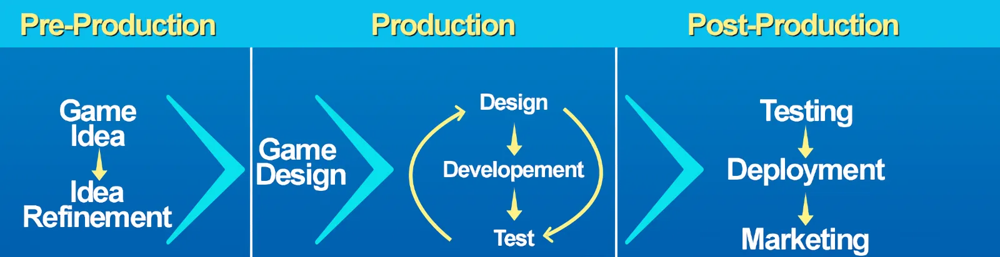

Previous slide Next slide Toggle fullscreen Open presenter view
Il lavoro dietro la decima arte
L'evoluzione della creatività e tecnologia con i videogiochi
di Stefano Cecere
In 50 anni siamo passati da...
Chi sono: Stefano Cecere
tecnologia, giochi, educazione, musica, attivismo
Pong (1972) e l'era arcade
davanti allo schermo, insieme, a giocare
Programmazione semplice, design minimalista.
codice sorgente
Q: Video vs Videogame?
sono entrambi medium
ma qual è la più grande differenza?
C'è intelligenza che interagisce
il nostro giocatore, un agente "intelligente"
a differenza di libri e film e musica che possono andare in play da soli, un videogioco, no!
Chi fa un videogioco?
Game Designer
Game Developer
Artists
Avventure Testuali
Esempi: Zork , Colossal Adventure (1977-1980).
Coding: Codifica del testo
Art: schermate
Arriva la grafica
Q: percezione o immaginazione?
Hai mai videogioco senza immagini, solo con testo?
Quale aspetto di un videogioco prediligi: la grafica o la storia?
Avventure grafiche Punta e Clicca
Monkey Island (1990)The Dig
Thimblewood Park
Q: storie lineari o interattive?
Quali sono le differenze tra i videogiochi in cui segui una storia predefinita e quelli in cui puoi influenzare la storia? Quale preferite?
Myst (1993)
una narrativa non lineare . Oltre a enigmi davvero sfidanti.
Pac Man e gli avversari
con Pac Man (1980) arrivano gli avversari, ovvero Intelligenze Artificiali antagoniste.
Street Fighter II (1991)
Doom e il 3D
Doom (1993): primo salto nel 3D.Quake
come pietra miliare del rendering 3D
L'arte nei videogiochi
Assassin's creed e la storia
Machine Learning e piloti
VIDEO
youtube
La scienza del Game Design
Cosa rende un gioco coinvolgente?
Le meccaniche di gioco, l'equilibrio tra sfida e ricompensa, e il design delle dinamiche che tengono il giocatore agganciato.
Progressione e ricompense
I giochi creano motivazione e soddisfazione attraverso la progressione (livelli, esperienze, abilità sbloccabili) e le ricompense (oggetti, potenziamenti, riconoscimenti). Questo aiuta a mantenere il giocatore coinvolto.
Pokémon Rosso e Blu (1996)
Dinamiche di Gioco e Interazione Sociale
I giochi multiplayer e cooperativi creano dinamiche sociali uniche.
Esempio: Among Us ha reso la comunicazione e il bluff centrali nell'esperienza di gioco.
World of Warcraft (2004)
Massively Multiplayer Online Role-Playing Game (MMORPG) che ha cambiato il modo di concepire i mondi persistenti online, introducendo meccaniche sociali complesse e un'economia virtuale.
Wii Sports (2006)
Portal (2007)
SimCity (2000) e la gestione di sistemi complessi
nel giusto mezzo
Il bilanciamento tra difficoltà e accessibilità è cruciale. I designer devono considerare curve di apprendimento e diversità dei giocatori per evitare frustrazioni o noia
Tetris (1984)
Space Invaders (1978)
Esperienza Utente (UX) e Interfaccia Utente (UI)
Un buon game design considera attentamente come i giocatori interagiscono con il gioco. Una UI intuitiva e una buona UX rendono l’esperienza fluida e piacevole.
Esempio: The Last of Us offre una UI pulita e minimale che non distrae dall'immersione.
Level Design
La costruzione degli ambienti di gioco e il posizionamento di sfide e nemici all'interno di essi è cruciale per il ritmo e la narrativa. Ogni livello racconta una storia attraverso il design.
Super Mario Bros (1985)
Psicologia del gioco e motivazione intrinseca
Capire perché le persone giocano è fondamentale. La teoria della motivazione intrinseca (autonomia, competenza, relazione) e la psicologia del flusso (flow) sono centrali nel design di esperienze coinvolgenti.
Scelte e conseguenze
Dare ai giocatori la possibilità di fare scelte significative che influenzano la trama o l'esito del gioco rende l'esperienza più personale e coinvolgente.
Game Feel
Il "game feel" riguarda come il gioco "si sente" in termini di risposta ai controlli, animazioni fluide e feedback tattili o visivi che amplificano l'interazione del giocatore con il mondo di gioco.
Esempio: Celeste , con controlli molto precisi e responsivi che migliorano l’esperienza di platforming.
Monetizzazione e Design Etico
Con la crescita dei modelli free-to-play, è importante parlare delle pratiche di monetizzazione (microtransazioni, loot box) e delle sfide etiche che queste pongono in termini di design e responsabilità verso i giocatori.
Fortnite (2017)
Innovativo per la combinazione di un battle royale e un sistema di costruzione in tempo reale, unito a un modello free-to-play che ha ridefinito il mercato dei giochi online e il concetto di giochi come servizi (games as a service).
Narrativa Emergente
La narrativa emergente è quella che viene generata spontaneamente dall’interazione dei giocatori con il mondo di gioco, piuttosto che dalla trama predefinita.
Minecraft (2011)
Ha introdotto il concetto di sandbox totale, permettendo ai giocatori di costruire e creare liberamente in un mondo infinito. Ha aperto la strada al genere "creativo" e ha dimostrato il potere del gioco emergente.
Narrazione Interattiva
Final Fantasy , The Last of Us : narrazione interattiva e scelte narrative.
Giochi Mobile
Dalla semplicità di Snake ai giochi complessi come Angry Birds .Candy Crush , e come ha cambiato il mercato e il design.
L'importanza del design accessibile.
Effetti sonori e Ambiente
Journey (2012)
Il suo contributo è stato particolarmente rilevante grazie alla colonna sonora dinamica e interattiva composta da Austin Wintory. La musica in Journey non è solo un accompagnamento, ma si adatta alle azioni e alle emozioni del giocatore, creando un'esperienza profondamente immersiva.
Grafica e Modellazione 3D
Procedural Generation
La generazione procedurale di ambienti e oggetti è diventata sempre più popolare, specialmente in titoli come No Man's Sky (2016), che genera in modo procedurale interi pianeti e universi.
Graphics Programming: Shaders
Gli shader sono piccoli programmi che definiscono il comportamento della luce e il rendering delle superfici nei videogiochi. I giochi moderni fanno uso massiccio di shader complessi per creare effetti realistici di luce, ombre e riflessioni.
Simulazione Fisica e Collision Detection
La simulazione fisica è fondamentale per creare movimenti realistici e interazioni tra gli oggetti. Half-Life 2 (2004) è stato uno dei primi giochi a fare uso estensivo del motore fisico Havok , introducendo oggetti interattivi e dinamiche fisiche realistiche nel gameplay.
AI e Pathfinding
Il pathfinding è la tecnica usata per far sì che gli NPC trovino il percorso migliore all'interno di un ambiente complesso. Giochi come F.E.A.R. (2005) hanno rivoluzionato l'IA dei nemici, rendendoli più intelligenti e adattabili.
The Legend of Zelda (1986)
Introduzione di un mondo aperto da esplorare, combinando elementi d'avventura, azione e puzzle-solving, un mix di meccaniche che ha influenzato interi generi.
Grand Theft Auto III (2001)
Q: la miglior Intelligenza
Qual è il comportamento più intelligente che avete visto in un nemico o in un personaggio non giocante? Cosa rende un'IA nei videogiochi davvero convincente?
Il Futuro dei Videogiochi: XR
Come si sviluppa un gioco?

Consigli per iniziare
"giocare" con i tutorial (unity, unreal)
canale youtube
copiare giochi (semplici) esistenti
Game Jams
parlate con il vostro prof!
Strucked (Unity online)
gratuito
web
facile
multigiocatore
visual scripting
Global Game Jam
migliaia di giochi, tutti con codice sorgente
creazione di mondi attraverso la narrativa.
commenti di descrizione
qui ci va il racconto
Introduzione all'arte digitale e all'importanza delle interfacce intuitive, con focus sulla narrazione visiva.
- Musica interattiva in giochi come *Journey* e *Rez*.
- Come la colonna sonora influenza l'emozione.
- Il processo di **rigging** è fondamentale per dare vita ai modelli 3D attraverso l'animazione. Un esempio notevole è _Shadow of the Colossus_ (2005), dove i colossi sono modelli enormi che richiedono un rigging complesso per permettere movimenti fluidi.
- I software moderni come **Maya** e **Blender** sono standard nell'industria per il rigging e l'animazione, ed hanno permesso di ottenere risultati sempre più realistici.
- Realtà virtuale e aumentata, AI avanzata e le nuove tecnologie.
- Come influenzeranno i giochi futuri.